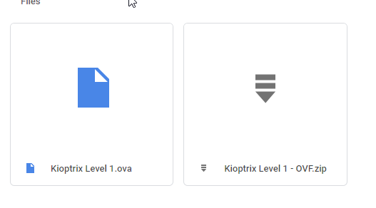

dawnlod kioptrix level 1 vulnerable machine from this following link[ Kioptrix - Google Drive ] or google
from this google drive dawnlod .ova file and install it on your virtual box or vmware

kioptrix : it is vulnerable machine which is available for praticeing hacking techniques
note : in vmware or virtual box give this mini. 512mb RAM and Network adapter as NAT
imp note : login for this machine is
username : john
password : TwoCows2